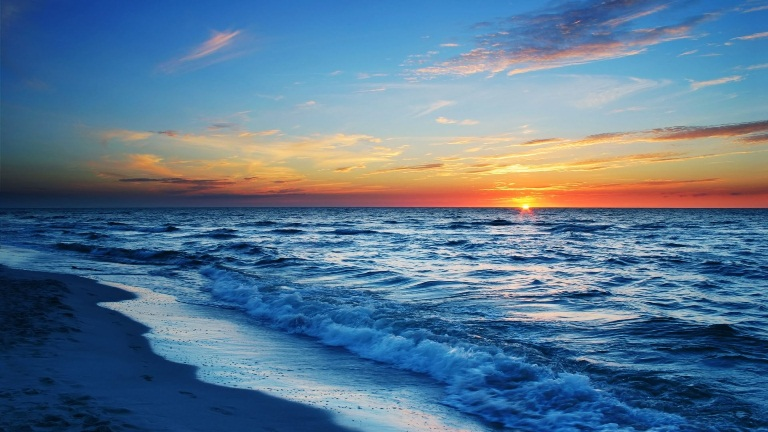

площадь 422 тыс. квадратных километров Максимальная глубина - 2210 м Чаша моря вмещает 527 кубических километров воды. По форме Черное море напоминает овал с наибольшей осью 1150 километров. Наибольшая протяженность с севера на юг 580 километров, а наименьшая 265 километров.
Средняя глубина Черного моря - 1240 м.
Черное море расположено в средних широтах: 41 – 46 градус северной широты
В Черном море соленость воды в среднем - 18, в Азовском море – 4, в Средиземном море - океаническая соленость воды - 37 грамм на 1 литр воды.
Соединяется проливами Босфор и Дарданеллы с Мраморным и Средиземным морем, Керченским проливом с Азовским морем.
Единственный крупный полуостров в Черном море - Крымский.
Крупнейшие заливы: Ягорлыцкий, Тендровский, Джарылгачский, Каркинитский, Каламитский, Феодосийский, Варненский, Бургасский, Синопский, Самсунский.
Общая длина береговой линии — 3400 километров.
Острова в Чёрном море: самый крупный остров - Джарылгач - площадь 62 квадратных километра. Другие острова меньше, наиболее существенные: Березань и Змеиный - оба площадью менее 1 квадратного километра.
Особенность Черного моря состоит в том, что на глубине свыше 150-200 метров начинается область обитания анаэробных бактерий, результатом жизнедеятельности которых является выделение сероводорода. Организмы, нуждающиеся в кислороде, там обитать не могут. Жизнь развивается только в верхнем пласте моря. Этот пласт составляет 12 - 13 процентов общего объема моря, при этом содержит 80 процентов всей фауны Черного моря. Это морские виды, проникшие сюда через Босфор и солоновато-водные организмы, распространенные в подобных водоемах по всей планете. А пресные виды появляются из впадающих в Черное море рек.
Черное море беднее видами живых существ, чем Средиземное. Но это связано с особыми условиями этого водоёма. Обитают: 1. виды, переносящие широкий диапазон солености воды. 2. виды данного температурного режима - вода умеренно холодная. 3. виды, которым в любой период развития не нужны большие глубины.
Все виды живых существ можно разделить на две большие группы: постоянные и временные.
В Черном море обитает 2,5 тыс. видов животных:
В Средиземном море, для сравнения – около 9 тыс. видов животных, а в Азовском - около 600 видов. Крупные подвижные животные заходят в Черное море из Средиземного по своей воле. Но большое число видов постоянно заносится сюда независимо от их желания, через проливы.
В проливе Босфор постоянно существуют два течения: 1. Верхнее - несет опресненную воду из Черного моря в Мраморное и далее в Средиземное море. 2. Нижнее - доставляет более соленую и теплую воду в Черное море. С ней (толщина потока 2-8 метра) в море заносятся планктонные организмы. Здесь найдены живые морские звезды, офиуры, морские ежи.
Флора Черного моря включает в себя: - 270 видов зеленых, бурых, красных донных водорослей. - 350 видов микроскопических планктонных. - масса различных бактерий.
Сделано Сергеем Дмитриевым